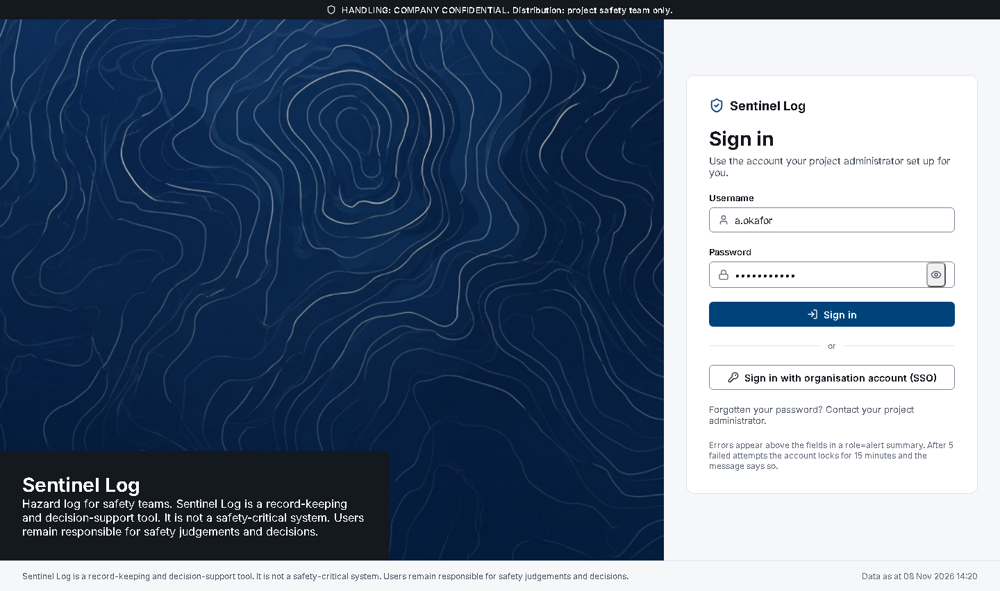

UC-1: Sign in; manage users and roles. Actor: All / Admin
Main flow
- The user opens /accounts/login/ and the sign-in form renders with username and password fields (req-48).
- The user enters valid credentials and submits; the product creates a session and lands on the register (req-48).
- An administrator opens the Django admin users page; the seeded users exist with their roles (req-47).
- The user signs out; the session ends and protected pages redirect to sign in (req-48).
- The product serves the session over the configured secure defaults with no external calls (req-50).
Stills

Not in release: Profile organisation and phone fields, single sign-on, second factor, requirements text edits, personal data handling, erasure audit behaviour, personal data export and erasure UI, and full ASVS Level 2 scope are not in this release.
Cited check phrases
- sign-in form renders username and password fields